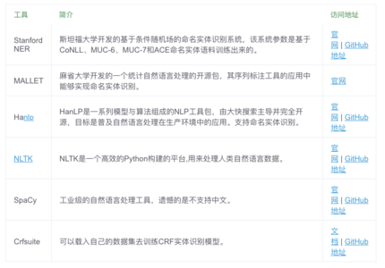

1. 概念
命名实体识别（Named Entity Recognition，简称NER），又称作“专名识别”，是指识别文本中具有特定意义的实体，主要包括人名、地名、机构名、专有名词等。简单的讲，就是识别自然文本中的实体指称的边界和类别。
2. 实现
有监督的学习方法：这一类方法需要利用大规模的已标注语料对模型进行参数训练。目前常用的模型或方法包括隐马尔可夫模型、语言模型、最大熵模型、支持向量机、决策树和条件随机场等。值得一提的是，基于条件随机场的方法是命名实体识别中最成功的方法。
半监督的学习方法：这一类方法利用标注的小数据集（种子数据）自举学习。
无监督的学习方法：这一类方法利用词汇资源（如WordNet）等进行上下文聚类。
混合方法：几种模型相结合或利用统计方法和人工总结的知识库。
值得一提的是，由于深度学习在自然语言的广泛应用，基于深度学习的命名实体识别方法也展现出不错的效果，此类方法基本还是把命名实体识别当做序列标注任务来做，比较经典的方法是LSTM+CRF、BiLSTM+CRF。
3. 数据集
4. 工具包

5. 实战应用
5.1 使用预训练模型
很多工具包有提供已经训练好的NER模型，可以直接使用。
5.2 训练自己的NER模型
5.2.1 有监督的学习方法
1）语料准备
可以查找公开的数据集，或者自己人工标记语料，人工标记流程如下：
定义实体类别，比如：
1
2
3
4
5
6time: 时间
location: 地点
person_name: 人名
org_name: 组织名
company_name: 公司名
product_name: 产品名收集语料
人工标记实体
2）数据增强（Optional）
对原语料进行分句，然后随机地对各个句子进行bigram、trigram拼接，最后与原始句子一起作为训练语料。
3）模型训练
- 传统机器学习：隐马尔可夫模型、语言模型、最大熵模型、支持向量机、决策树和条件随机场等，推荐条件随机场。
- 深度学习：BiLSTM-CRF、IDCNN-CRF
5.2.2 半监督的学习方法
5.2.3 无监督的学习方法
6. Reference
- 命名实体识别 – Named-entity recognition | NER NER整体框架概括比较全面
- 一文详解深度学习在命名实体识别(NER)中的应用 深度学习算法讲的细致
- 零基础入门–中文命名实体识别（BiLSTM+CRF模型，含代码）BiLSTM+CRF模型的落地代码
- NLP入门（四）命名实体识别（NER）NLTK和Stanford NLP工具包使用